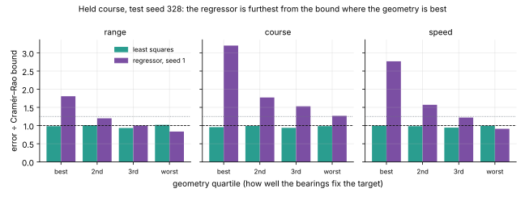
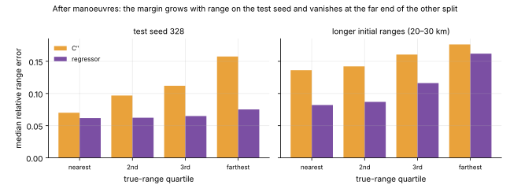
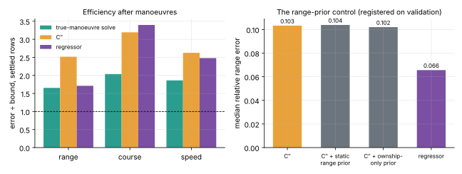

The scaled regressor: a learned control that beat the classical system
Spec 012: registered readings on test seed 328, and what the panel withdrew
12 November 2026 · spec 012 · gitma2
Why a control
Every learned part so far was wrapped round a classical solve, and added little.
Question: what does a direct model reach with no physics layer and no segmenter?
Never carried: it states no usable uncertainty and no manoeuvre times.
What was trained
Causal transformer, 8 layers × 256, 6.4 M parameters.
About 20 M simulated engagements, drawn on the fly.
3 seeds, a tenth-of-data model, an ownship-only model.
38 T4-hours on Modal: $25.81 of a $50 budget.
Reading 1: a steady target

Partial, as forecast: range 1.13–1.16 × the bound, course 1.75, speed 1.42. Worst where the geometry is best; below the bound where it is worst, which only a biased estimator can be.
Reading 2: after manoeuvres
Regressor
C″
Difference [95%]
Range (relative)
0.066
0.105
−0.039 [−0.045, −0.033]
Range (metres)
1,008
1,665
−657 [−765, −565]
Course
9.6°
12.7°
−3.1° [−4.0, −2.3]
Speed
1.34 kt
1.47 kt
−0.14 [−0.23, −0.05]
The forecast said "worse than C″". It was wrong.
Test seed 328, 7,796 rows both answer, three seeds agree.
Where the margin is, and is not

It grows with range on the test seed. On the split with longer initial ranges it vanishes in the farthest quartile, where the model must extrapolate.
What the panel withdrew
"First clear result for learning" → a prior-informed, error-minimising model beats a prior-free fit, in median range.
"Holds on ranges it never saw" → the split moves one number, and the margin fades there.
"It hedges between manoeuvre histories" → untested, carried over from other data.
"More data would not help" → the control varied data, not capacity.
Three reviewers, all "approve with findings". The measurements were checked against the raw files and stand.
Is it just a range prior?

Left: the regressor is worse than C″ in course efficiency. Right: C″ combined with a range prior (rule fixed on validation first) closes about 3% of the margin. Not simple shrinkage.
What was not achieved
The source of the margin: the hedged-C″ control is not built.
Anything outside the simulator: the model may only know Annex B's statistics exactly.
A naive estimator on the same rows; pooled seeds; the larger-model run.
A usable output: no uncertainty, no manoeuvre times, 3.2 × the bound in course in the best geometry.
What comes next
Spec 013 builds the right comparison: a classical search over manoeuvre histories with the same prior knowledge.
A learned model must beat that, not a prior-free fit.
The remaining GPU budget (about $24) is held until that control exists.